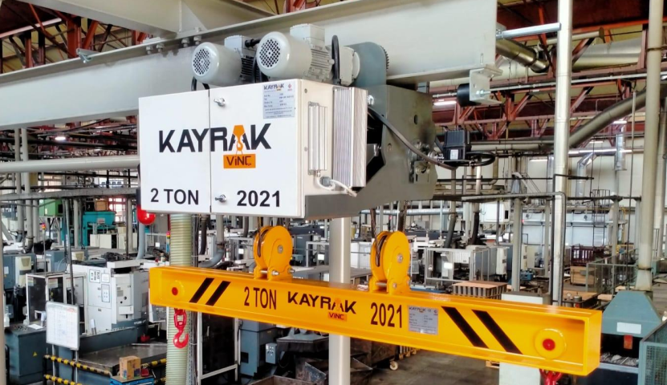
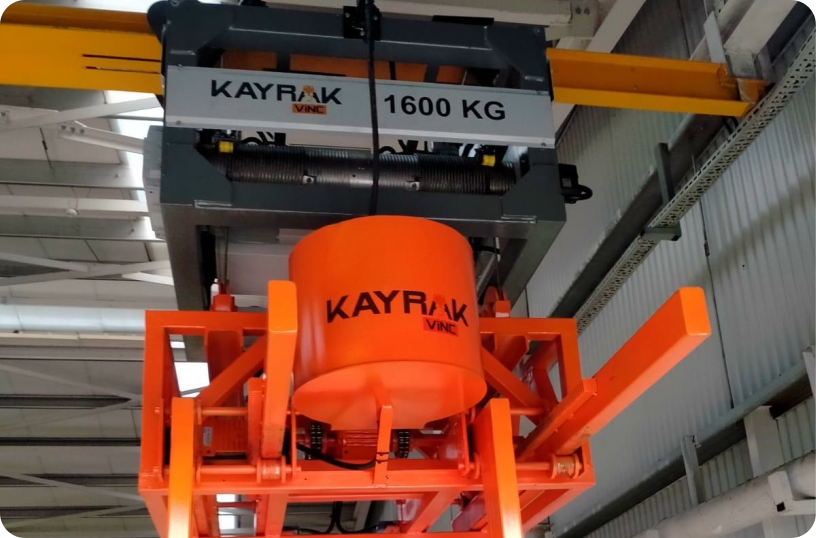
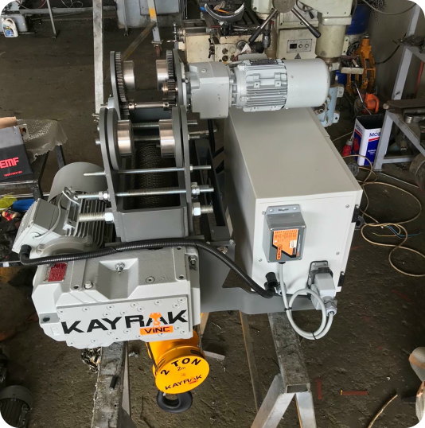
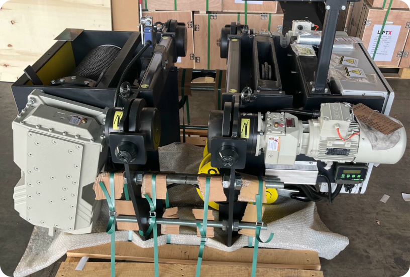
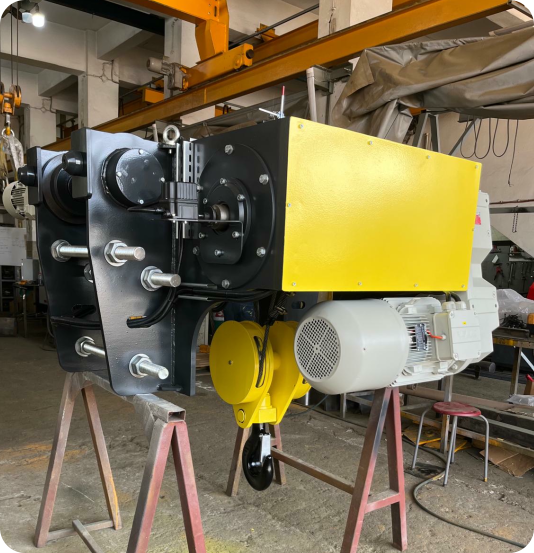
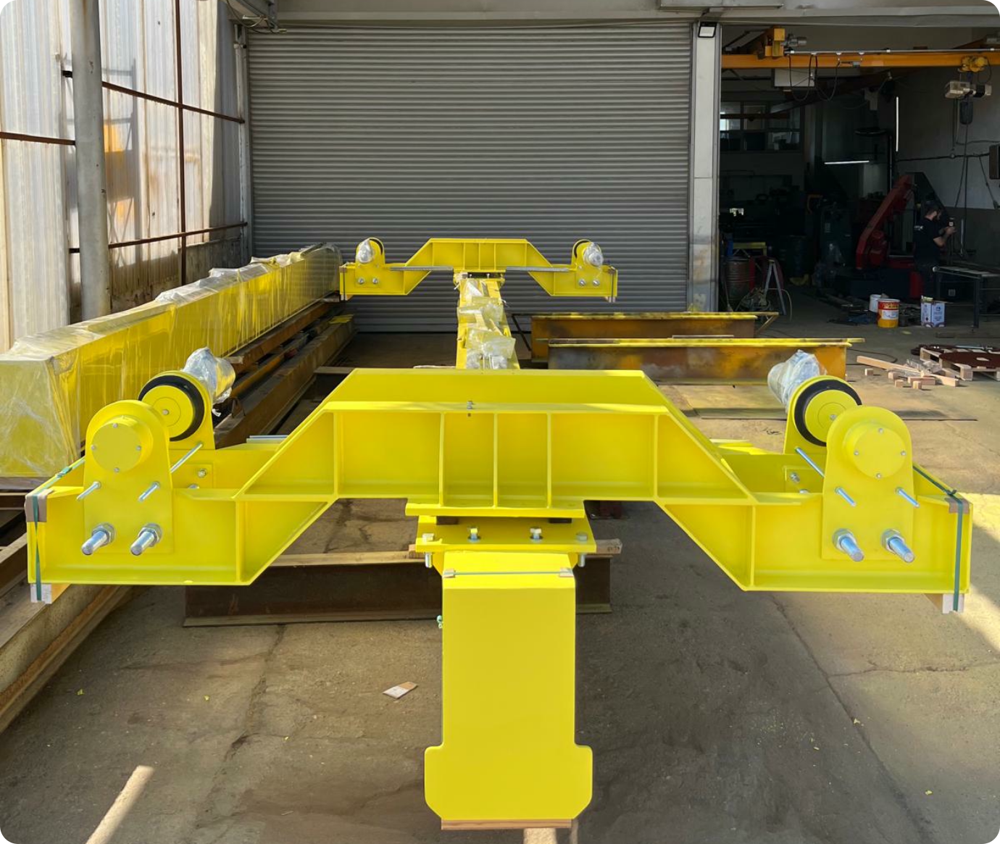
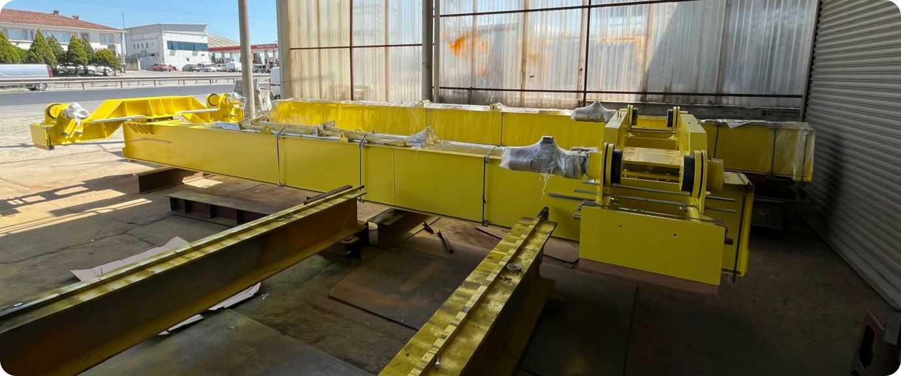
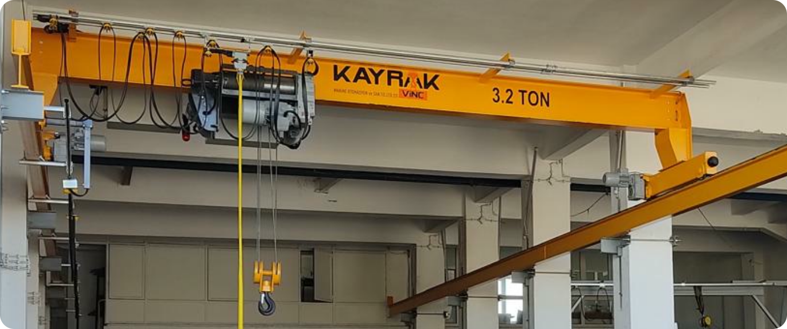
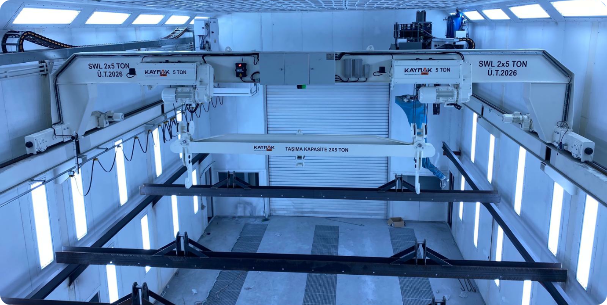
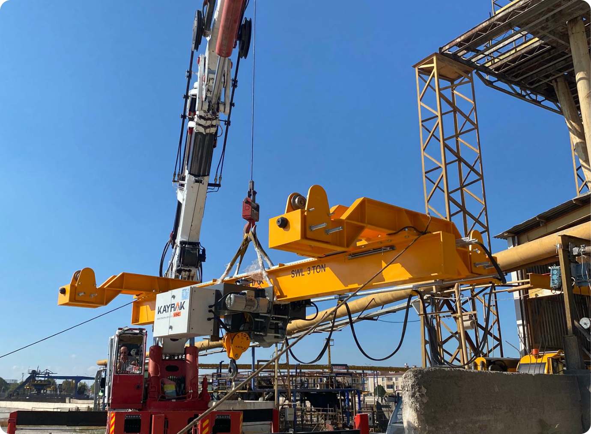

MONORAY VİNÇLER
İŞİNİZİN YÜKÜNÜ HAFİFLETİYORUZ
Monoray köprü vinçler, kompakt yapıları ve ekonomik çözümleriyle orta ölçekli yük kaldırma ihtiyaçları için tercih edilmektedir. Hafif ve orta yük sınıfında güvenli ve hızlı kaldırma işlemleri sağlayan bu sistemler, üretim hatları, depolama alanları ve montaj hatlarında yaygın olarak kullanılır.



Günümüz sanayi ve üretim sektörlerinde verimlilik, hız ve güvenlik her zamankinden daha büyük önem taşıyor. Bu gereksinimlere yanıt verebilmek için geliştirilen Gezer Köprü Vinçler, ağır yüklerin güvenli ve etkili şekilde taşınmasını sağlayarak endüstriyel süreçlere değer katıyor.
Üretimini gerçekleştirdiğimiz vinç sistemleri, uluslararası kalite standartlarında üretilmekte olup, her projeye özel mühendislik çözümleriyle donatılmaktadır. Sadece yük taşımakla kalmaz; iş güvenliği, enerji verimliliği ve operasyonel süreklilik açısından da fark yaratır.
Siz de yükünüzü uzman ellere bırakmak, üretiminizi güvenle taşımak istiyorsanız, Monoray Gezer Köprü Vinç çözümlerimiz ile tanışın.
Teknik Özellikler:
- Kaldırma kapasitesi: 1 ton - 10/16 tona kadar
- Kaldırma yüksekliği: Talebe göre değişken
- Tek ana kiriş yapısı ile hafif konstrüksiyon
- Genellikle elektrikli halatlı ya da zincirli vinç sistemleri ile donatılır
- Kompakt yapı sayesinde düşük tavan yüksekliğine uygundur


KAYRAK MONORAY GEZER KÖPRÜ VİNÇLERİ AĞIR YÜKLERİN HAFİF ÇÖZÜMÜ




Avantajlar:
- Düşük işletme ve kurulum maliyeti
- Kolay montaj ve bakım imkanı
- Kompakt tasarım sayesinde dar alanlarda kullanım avantajı
- Hafif yapısıyla yapı taşıyıcılarına minimum yük bindirir
- Enerji tasarrufu sağlar, verimli ve hızlı kaldırma çözümleri sunar
